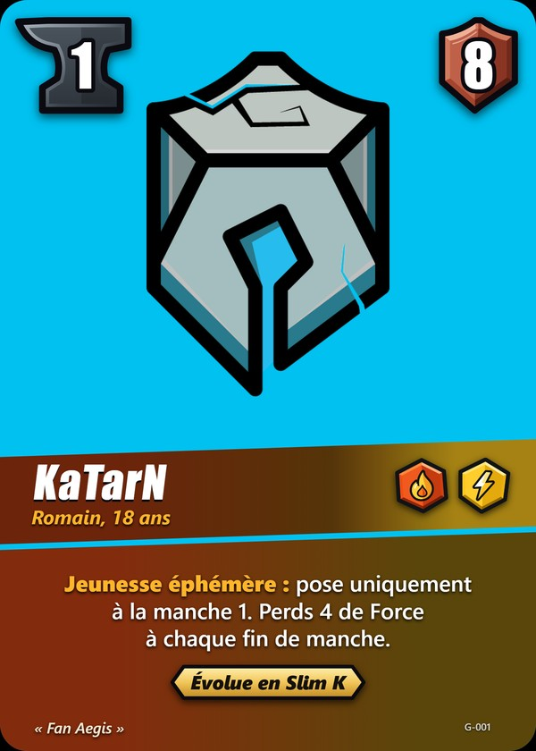
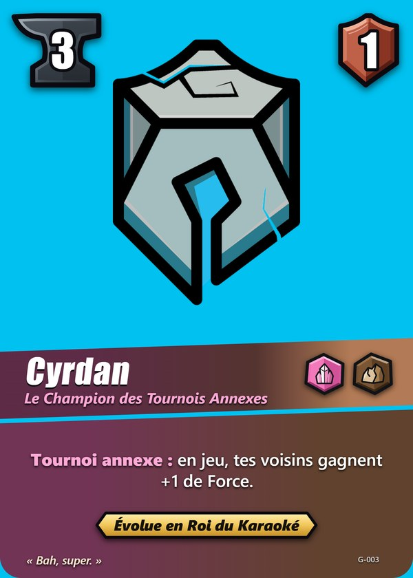

Les règles complètes du jeu pour apprendre à jouer.
La partie
- 3 terrains sont tirés au hasard parmi 16 et placés aléatoirement. Chacun rapporte les points imprimés dessus.
- Les joueurs sont face à face. Chacun a une grille 3 x 3, en miroir de l'autre et une colonne correspond à un terrain.
- Les cartes ne citent jamais de numéro de ligne ou de colonne : elles désignent les cases par le terrain, la case en face ou la ligne adverse.
- En face : même terrain, même ligne.
- Ligne adverse : les 3 cases adverses de la même ligne.
- Voisin : Golem allié sur une case adjacente, sans diagonale.
- En jeu : une carte posée sur une grille.
- La partie dure 3 manches de 3 tours par joueur. Le premier joueur est tiré au sort, puis il change à chaque manche.
- Quitter une partie en cours compte comme un abandon.
- Si un joueur perd la connexion, la partie l'attend : il apparaît « Reconnexion » pendant 10 secondes. Au-delà, il passe « Hors ligne » et un minuteur de 60 secondes démarre ; s'il ne revient pas à temps, il perd par abandon. S'il revient avant, la partie reprend où elle en était. Si les deux joueurs sont déconnectés, personne ne gagne : le minuteur repart au retour du premier. Connecté à ton compte, tu retrouves ta partie sur n'importe quel appareil. Contre les Golems, pas de minuteur.
Mise en place
5 cartes en main. Mulligan de 3 cartes maximum : elles retournent dans le deck, on mélange, puis on repioche.
Le tour
- Pioche2 cartes (1 au premier tour du second)
- Forge0 ou 1 carte
- ActionsPoser, remplacer, améliorer
- Fin du tourÉnergie perdue, 7 cartes max
- Pioche : 2 cartes. À chaque manche, le joueur qui joue en second ne pioche qu'une carte à son premier tour de la manche. Deck vide : si ton deck est vide, chaque carte que tu dois piocher donne 1 point à ton adversaire. Toutes les pioches comptent, y compris celles des effets de cartes.
- Forge : toujours en premier, après la pioche. Place 0 ou 1 carte de ta main, face cachée, définitivement, avant toute action et avant les effets gratuits de certains terrains. Chaque carte en Forge donne 1 énergie par tour, dès ce tour. La Forge est ta seule source d'énergie.
- Actions : paie en énergie, puis passe quand tu ne veux ou ne peux plus agir.
- Poser : paie le coût de la carte.
- Remplacer : paie le coût de la nouvelle carte ; l'ancienne va à la défausse. Tu ne remplaces que tes propres Golems.
- Améliorer : paie le coût de l'évolution, possible dès le tour de la pose. Il faut avoir déjà posé la version de base du Golem.
- Fin du tour : l'énergie restante est perdue, défausse jusqu'à 7 cartes.
Fin de manche
- Décompte : on additionne la Force actuelle de chacun de tes Golems dans chaque colonne. Une colonne vide vaut 0.
- Le plus fort conquiert le terrain et marque ses points. En cas d'égalité, personne ne le marque.
- Effets de fin de manche : pour chaque joueur, en commençant par le premier joueur de la manche, ses Golems d'abord, puis ses terrains de gauche à droite vus du premier joueur.
- Les cartes et les dégâts restent, le premier joueur change.
Exemples
- KaTarN (carte) compte 8, puis 4, puis 0 sans bonus, et est détruit à la fin de la manche 2.
- Le Buzzer est toujours résolu en dernier.
- La Nuit au Village se résout avec le premier joueur.
Deck vide : si ton deck est vide, chaque carte que tu dois piocher donne 1 point à ton adversaire.
Fin de partie : le plus de points après la manche 3, effets compris. En cas d'égalité, la plus grande Force totale (somme des trois colonnes) au dernier décompte l'emporte. Si elle est aussi égale, l'emporte celui qui a conquis le plus de terrains sur toute la partie, puis, en dernier recours, celui qui jouait en second à la manche 3. Il n'y a jamais de match nul.
Terrains
- Un effet de terrain s'applique aux deux joueurs, sauf mention contraire.
- Un terrain est actif toute la partie, et son résultat est définitif pour chaque manche.
- Valeur variable : un terrain marqué « ? » change de valeur selon la manche. Le Tournoi vaut 1 point à la manche 1, 2 points à la manche 2 et 3 points à la manche 3.
- Mise : Les Pronos. Une fois par manche, pendant tes actions, tu peux miser 1 énergie ici (bouton « Miser »). En fin de manche, celui qui conquiert le terrain marque 1 point de plus par mise des deux joueurs. Les mises de la manche sont perdues si personne ne le conquiert.
- Tarte : Le Cirque. Une fois par manche, pendant tes actions, tu peux infliger 1 dégât gratuit à un Golem adverse de cette colonne. Mode Avion en protège.
- Un seul Golem : Le Versus. Tu ne peux pas y poser un 2e Golem, seulement remplacer le tien ou le faire évoluer. À chaque pose ici, le Golem adverse ici perd 1 de Force (dégât). Mode Avion en protège. Un animal n'est pas un Golem : il ne compte pas et ne déclenche rien.
- Pioche de fin de manche : L'École. Le joueur qui perd ce terrain pioche 1 carte, personne en cas d'égalité. Deck vide : 1 point pour l'adversaire, comme pour toute pioche.
- Exactement 2 : Le Karaoké donne +2 de Force à chacun de tes Golems ici seulement si tu en as exactement 2.
Force et dégâts
- Force actuelle = Force de la carte + bonus de capacités + Trait + cercle - dégâts subis.
- Les dégâts sont conservés entre les manches. Perdre de la Force, c'est subir des dégâts.
- À 0 ou moins, le Golem est détruit et part aussitôt à la défausse. Tous ceux à 0 ou moins meurent en même temps, puis on recalcule, et ainsi de suite. Tuer ne rapporte rien.
- On n'attaque que par les effets de cartes.
- Évolution : se pose sur sa base et prend sa place ; la base part aussitôt à la défausse. Tous les dégâts de la base sont annulés : l'évolution a sa propre Force et ses propres effets, ceux de la base sont perdus.
Effets
- À la pose : à chaque arrivée sur la grille (Poser, Remplacer, Améliorer), après paiement. Échanger ou déplacer n'est pas une pose et garde les dégâts.
- En jeu : tant que la carte est sur la grille.
- Un effet s'applique en entier. Sans cible, il ne se passe rien.
- La carte prime sur la règle.
- Copie : un Golem qui copie un effet ne prend que l'effet, ni le nom, ni la Force, ni les éléments. Copier un Golem qui a lui-même copié donne l'effet qu'il a copié.
Éléments
Magma (attaque), Cristal (soutien), Foudre (énergie), Brume (pioche), Roche (terrain).
Chaque flèche part de l'élément qui domine vers l'élément dominé.

+1 de Force
+1 de ForceExemple : KaTarN (Magma, Foudre) fait face à Cyrdan (Cristal, Roche). Magma domine Cristal : KaTarN gagne +1. Roche domine Magma : Cyrdan gagne +1 aussi.
- Cercle : +1 si le Golem en face (la case adverse sur le même terrain et la même ligne) a un élément que le tien domine. Jamais plus de +1, sauf effet de carte.
- Comme chaque Golem a deux éléments, les deux Golems face à face peuvent chacun dominer l'autre : par exemple Magma + Foudre face à Roche + Brume (Roche domine Magma, Foudre domine Brume) : les deux gagnent +1.
- Trait : pour chacun de ses 2 éléments, +1 par voisin allié qui partage cet élément. Les voisins se cumulent, sans plafond. Exemple avec KaTarN (Magma, Foudre) : deux voisins Foudre +2, un seul voisin Magma et Foudre +2 à lui seul.
- Les effets de cartes peuvent donner plus. Le Trait s'ajoute au cercle, qui reste à +1 au maximum, sauf effet de carte.
- Trait et cercle sont toujours actifs : perdre un voisin ou un Golem en face peut détruire un Golem, en chaîne.
Cartes et decks
- Deck de 24 à 30 cartes, 3 exemplaires maximum de chaque carte, 1 seul par animal. Une base et son évolution sont deux cartes différentes, comptées à part.
- 4 éléments différents au maximum par deck : un Golem à 2 éléments compte les deux, un animal n'en a aucun.
- Pas d'évolution sans sa base : pour mettre une évolution dans ton deck, ajoute au moins un exemplaire de sa carte de base.
Animaux de compagnie
- Pose : coût 0. L'animal se glisse sous son maître, qui doit déjà être en jeu, et lui donne +1 de Force. Il ne prend pas de case. Un seul animal par maître.
- Pas un Golem : ni élément ni Force à lui, jamais d'évolution. Aucun effet ne le concerne : ni cible, ni bonus, ni favori, ni copie ; il ne compte pas pour le Trait, ni pour le cercle, ni pour un terrain.
- Deck : 1 exemplaire par animal, et seulement avec au moins un exemplaire de la base de son maître. Plusieurs animaux différents sont permis.
- Son maître : s'il quitte le jeu (détruit, remplacé, La Nuit au Village), l'animal part à la défausse. S'il évolue, l'animal reste. S'il est déplacé (La Faille, Le Vaisseau, Slam), l'animal le suit. Un Golem qui copie son effet n'est pas son maître.
- Kiwi : la Mignonitude se résout en fin de manche, puis vient le décompte, et juste après Kiwi part à la défausse. Deux Kiwi : celui du premier joueur d'abord, jamais deux fois le même Golem.
- Jacen et Jaina : les chats de KaTarN (ou Slim K). À la pose, pioche 1 carte. Si leur maître est détruit, pioche 1 carte, puis les chats partent à la défausse. Si tu remplaces toi-même leur maître, pas de pioche. Deck vide : chaque carte que tu dois piocher donne 1 point à ton adversaire.
- Hors décompte : le Golem tiré par Kiwi reste en jeu avec ses bonus ; seule sa Force sort de sa colonne. Les effets de fin de manche le concernent toujours (La Nuit au Village, KaTarN).
- Un animal n'est jamais MVP.
Découvre toutes les cartes du jeu.
Aucune carte pour ce filtre.
Affronte un membre de la communauté ou un Golem.
Connexion au salon en ligne...
Le salon en ligne n'est pas disponible pour le moment. Le jeu contre les Golems reste possible.
Créer une partie
Rejoindre une partie privée
Apprendre et s'entraîner
Parties ouvertes
Parties en cours
Partie en cours
De 24 à 30 cartes, 3 exemplaires maximum par carte, base et évolution comptées à part. Animal de compagnie : 1 exemplaire, avec au moins un exemplaire de la base de son maître.
Consulte tes 50 dernières parties.
Les statistiques de toutes les parties de la communauté, calculées en direct.
Les dernières nouvelles du jeu : annonces, mises à jour et notes de patch.
Des vidéos de joueurs pour apprendre à jouer un deck, avec le deck à importer en un clic.